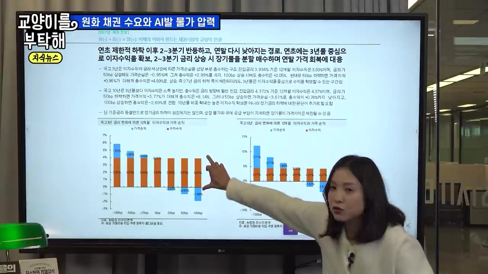

[지식뉴스] "지금 돈의 흐름이 바뀌고 있다" AI 빚폭탄의 진짜 실체…고금리가 길어질수록 한국에 벌어질 일 / 교양이를 부탁해
▶ 원본 영상 보기한눈에 보기
- 미국 국채금리는 5.3%에서 5.08%로 내려왔지만 AI 기업이 돈을 빌릴 때 붙는 하이일드 스프레드는 오히려 벌어지고 있습니다. 시장이 AI의 '성장'보다 '수익성'을 따지기 시작했다는 신호라고 봅니다.
- 미국은 재정적자가 2조 달러를 넘고 국채 가운데 차환 비중이 80%여서 금리가 구조적으로 내려가기 어렵다고 봅니다. 한국은 세금이 많이 걷혀 재경부가 국채 발행을 줄였고, 그래서 미국보다 먼저 금리가 내려갔다는 설명입니다.
- 내년에는 외국인(WGBI) 자금, 국민연금(최대 84조 원), 162조 원 규모의 미래대응기금이 원화 채권으로 들어올 수 있습니다. 이에 따라 "한국은 내년에 금리가 내려갈 재료가 더 많다"고 주장합니다.
- 한국은행 기준금리는 현재 3%이고 3.5%까지 오를 것으로 봅니다. 수출이 계속 좋으면 3.75~4%까지 열려 있어 고금리가 오래갑니다. 가장 크게 타격받는 쪽은 변동금리 대출이 많은 개인이라고 합니다.
- 출연자는 지금 환율 부담이 있는 미국채보다 이자만으로 손실이 메워지는 '원화 단기채(5년 이하)'를 권합니다. 장기채는 내년 1분기 이후 수급이 확인되면 늘리라고 말합니다(영상 속 주장).
이런 분께 도움이 됩니다
- 변동금리 대출이 있어 앞으로 금리가 어떻게 될지 궁금한 직장인
- 예금 말고 채권(국채·단기채) 투자를 처음 생각해 보는 개인 투자자
- AI 투자 붐이 금리와 한국 경제에 주는 영향을 한 번에 정리하고 싶은 분
핵심 내용
출연: 김명실 iM증권 리서치본부 투자전략부 부서장(재정경제부 국채시장자문위원, 한국은행 통화정책 패널). 2026년 10월 19일 촬영. 아래 전망과 투자 의견은 모두 출연자의 주장입니다.
AI 기업이 14~15% 금리로 돈을 빌린다 (0:46)
지난주 목·금에 한 AI 기업이 14~15%짜리 자금을 끌어다 쓴 사실이 알려지면서 "이 금리를 감당할 수 있나"라는 걱정이 번졌습니다.
- 성장 기대
- 외부 차입 확대
- 금리 상승
- 수익성 의심
- 스프레드 확대
- 1성장 기대
시장은 AI 산업을 '앞으로 생산성을 끌어올릴 성장 산업'으로 보고 하이퍼스케일러(대형 데이터센터를 운영하는 빅테크)에 글로벌 자금을 몰아줬습니다 (1:36)
- 2외부 차입 확대
AI 기업들이 채권을 발행해 돈을 빌리기 시작했습니다. 미국 정부 빚에 기업 빚까지 더해져 채권 공급이 늘었습니다 (2:25)
- 3금리 상승
수요는 그대로인데 공급이 늘어 채권 가격은 떨어지고 금리는 올라갔습니다 (2:40)
- 4수익성 의심
"이 금리를 못 버티는 기업이 나오면 어떡하지?" 하며 투자자들이 수익성을 따지기 시작했습니다 (2:48)
- 5스프레드 확대
국채금리는 내려가도 기업이 추가로 내야 하는 금리 차이(스프레드)는 오히려 벌어졌습니다 (3:09)
💡 시장의 질문이 "얼마나 클까"에서 "버틸 수 있나"로 바뀌었습니다.
국채금리는 내리는데 기업 금리는 오른다 (3:12)
- 미국 10년물 국채금리는 10월에 5.3%로 정점을 찍은 뒤 5.08%까지 내려왔습니다.
- 반면 하이일드(신용등급이 낮은 기업의 고금리 채권) 스프레드, 즉 OAS(자막상 'OES')는 계속 벌어지고 있습니다. 스프레드가 줄지 않으면 국채금리가 내려가도 기업이 실제로 빌리는 금리는 내려가지 않고 오히려 오릅니다.

- 국채금리가 내려온 이유: 유로존(프랑스 등)에서 재정 문제가 터지면서 "달러냐 유로냐"의 싸움에서 달러 채권 선호가 커졌습니다. 그래서 외국인 돈이 미국 국채로 잠시 들어왔습니다.
- 그런데도 하이일드 채권은 다르게 봅니다. 국채는 미국 정부가 망하지 않는 한 원금을 돌려받지만, 하이일드 채권은 "지금 당장 이자를 줄 수 있나, 회사가 망하지 않나"가 핵심이라 기준이 더 엄격해졌습니다.
- 손익분기점이 늦어지는 문제: 원래 2~3년 뒤에 이익이 날 거라 봤는데, 금리가 오르면서 차환 비용(만기가 된 빚을 새로 빌려 갚는 비용)과 조달 비용이 함께 커졌습니다. 그래서 수익이 나는 시점이 3년, 5년, 10년 뒤로 밀리고, 채권자는 더 높은 금리를 요구합니다.
💡 스프레드가 벌어졌다는 건 이 금리를 못 견디는 기업이 늘 수 있다는 뜻입니다.
미국 금리가 쉽게 내려가지 않는 이유: 재정 (6:14)
- 매크로 지표가 엇갈립니다. 물가 걱정 때문에 연준 의장(자막상 '케빈 씨')이 금리를 올릴 거라는 쪽과, 고용이 나빠져 결국 금리를 내릴 거라는 쪽이 맞서 있습니다.
- 금리를 끌어올린 핵심 원인인 재정은 하나도 해결되지 않았습니다. 블룸버그 기사 기준으로 올해(회계연도) 재정적자는 당초 전망 1.9조 달러보다 늘어 2조 달러를 넘을 것으로 우려됩니다. 이자 지출과 전쟁에 따른 국방비가 늘었기 때문입니다.
- 내년에도 적자를 줄이지 못하면 국채 발행이 더 늘어납니다. 출연자는 "5.1%까지 왔으니 다음은 4%대"라고 보기에는 풀어야 할 문제가 너무 많다고 말합니다.
- 미국 국채가 공급 충격으로 다시 오르면 스프레드는 지금보다 더 벌어질 수 있습니다.
한국 국채금리도 급등했다 (9:09)
- 한국 국채금리는 2025년 하반기부터 빠르게 올라 약 2년 동안 상승 압력을 받았습니다.

- 전쟁 이후 물가 부담이 커지면서 한국은행은 올해 7월과 8월 두 차례 기준금리를 올렸습니다. 신현송 총재(자막 표기가 여러 가지로 나옴)는 적어도 두 차례 더 올리고, 수출이 계속 좋으면 그 이상도 생각해야 한다는 뜻을 간접적으로 내비쳤습니다.
- 현재 3.00%
- 11월 3.25%
- 내년 1분기 3.5%
- 매파 시나리오 3.75~4%
- 1현재 3.00%
7·8월 두 차례 인상 뒤의 수준입니다 (10:10)
- 211월 3.25%
한 차례 더 올립니다
- 3내년 1분기 3.5%
기본 전망의 꼭대기입니다
- 4매파 시나리오 3.75~4%
수출이 계속 서프라이즈를 내면 여기까지 오를 수 있다고 보는 사람도 많습니다 (21:32)
- 오늘 기준 국고채 3년물 3.8%, 10년물 약 4.3%입니다. 시장은 이미 기준금리 3.5% 이후까지 가격에 반영하고 있습니다.
반도체 수출이 너무 잘돼도 문제다 (10:39)
- 한국 금리를 올린 결정적 이유는 인플레이션보다 성장입니다. 올해 경기는 "기승전 수출"이었습니다. 6월보다 7월, 7월보다 8월이 좋았고 9월은 서프라이즈였습니다.
- 다만 양극화가 있습니다. 수출은 뚜렷하게 오르는데 민간소비, 설비투자, 건설투자는 거의 오르지 않았습니다. 투자 안에서도 반도체 제조업 기계 수주는 2026년 하반기 들어 거의 수직으로 올랐지만 반도체를 뺀 산업은 여전히 부진합니다.
- 올해 GDP 성장률은 3.3%이고 내년에도 3% 이상이 가능하다는 것이 총재의 확신(컨빅션)입니다. 설비투자 증가율은 고금리가 정점이던 2분기에 피크(자막상 수치 불분명, '6.3%'로 들림)를 찍었습니다.
- 그래서 "이례적인 연속 3%대 성장"입니다.

잠재성장률과 비교하면 왜 이례적인가 (13:19)
- 한국은행 추정에 따르면 잠재성장률(무리 없이 낼 수 있는 성장률)은 2000년 5% → 2026년 2% → 2027년 1.8%로 떨어집니다.

- 떨어지는 이유는 세 가지입니다: ① 생산가능인구 감소 ② 총요소생산성(기술·효율로 생기는 생산성) 하락 ③ 자본 투자 증가세 둔화
- 예전에는 경기가 조금만 흔들려도 한국은행이 금리를 내려 경기를 받쳤습니다. 지금은 투자 사이클 덕에 기업 체력이 커져서, 견딜 수 있는 크레딧 스프레드가 예를 들어 4%에서 5~6%로 올라갔을 수 있다는 설명입니다.
- 미국과 같은 흐름입니다. 다른 점은 미국은 AI 산업 전체를 갖고 있고, 한국은 메모리에 집중돼 있다는 것입니다. 그래서 최근 주가 조정이 한국에서 더 크게 나타났다고 봅니다.
한국은행이 진짜 걱정하는 것: 수요 쪽 물가 (15:40)
- 유가 부담은 전쟁 때문에 생긴 일시적 요인이라 크게 걱정하지 않습니다. 걱정하는 건 성장이 버티면서 수요 쪽에서 계속 올라오는 물가 압력입니다. 이 압력이 결국 성장을 해치는 것이 최악의 경우입니다.
- 출연자의 내년 한국 물가 시나리오:
| 가정 | 내년 소비자물가 |
|---|---|
| WTI 평균 130달러 + 수요 쪽 물가 압력 확대 | 3.7% |
| WTI 평균 60달러 + 수요 쪽 물가 안정 | 1.7% |
- 두 시나리오의 차이가 너무 커서 결과를 예측하기 어렵습니다. 그래서 한국은행은 선제적으로 금리를 올려 물가를 누르는 중입니다.

- 신현송 총재와 미국 연준 의장의 고민은 같습니다. AI로 생산성이 올라가기 전까지는 인플레이션 압력이 커질 수밖에 없다는 것입니다.
삼성전자·하이닉스는 빚내서 투자하지 않는다 (18:47)
| 구분 | 미국 AI 기업 | 한국 기업 |
|---|---|---|
| 외부 차입 | 데이터센터·전력망 투자에 막대한 차입 | 삼성전자는 채권을 발행하지 않음, SK하이닉스도 차입 의존도 낮음 |
| 신용등급 | 오라클처럼 하이일드(비우량) 등급이 많음 | 회사채 시장 대부분이 AA·A 이상 투자등급(IG) |
| 고금리 영향 | 금리 수준·변동성에 크게 노출 | 정크본드 기업은 애초에 회사채를 못 냄 → 타격 작음 |
💡 한국 반도체 기업의 고민은 "돈이 없어서"가 아니라 "많은 돈을 어디에 쓸까"입니다.
"기업보다 가계가 더 위험하다" (21:03)
- 고금리가 오래가면 가장 크게 타격받는 쪽은 변동금리 대출을 가진 개인입니다.
- 기업 중에서는 채권을 많이 가진 금융기관(보험사, 연기금, 공제회, 증권사, 자산운용사)이 2년간 금리 상승으로 채권 평가손실을 크게 봤습니다.
- 매파적인 전망(기준금리 3.75~4%)의 근거는 수출입니다. 올해 수출 증가율은 자막상 '60.8%' 또는 '6.8%'로 들려 수치가 불분명합니다.
| 내년 월별 수출 증가율 가정 | iM증권 추정 내년 GDP 성장률 |
|---|---|
| 매월 0.5%씩 일정하게 증가 (기본) | 약 3.1% |
| 매월 1% 증가 | 3.4~3.6% (중간값 3.5%) |
- 주가는 미래를 먼저 반영하지만 실제 반도체 수출은 수급 차이 때문에 계속 늘 것이라고 봅니다.
한국 정부가 국채 발행을 5조 원 줄였다 (24:05)
국내 채권시장이 미국처럼 무너지지 않은 차이는 재정에 있습니다.
미국 베센트 재무장관의 바이백(국채를 다시 사들이는 것)은 "조삼모사"에 가깝다고 봅니다. 전체 채권 양은 그대로 두고 만기별 발행 비중만 바꿨다는 것입니다.
한국 재경부는 10월 국채 발행을 15조 원에서 10조 원으로 줄였습니다. 삼성전자·하이닉스가 법인세를 많이 내서 세수가 넘쳤기 때문입니다. 연간 발행은 약 200조 원으로 예상됐습니다. 재경부는 11~12월에도 금리가 안 잡히면 더 줄이겠다고 발표했습니다. 이는 발행 총량 자체를 줄이는 조치입니다.
이후 국내 채권금리는 미국보다 먼저 내려가 빠르게 안정되고 있습니다.
미국이 따라 하기 어려운 이유: 중간선거에서 블루웨이브(민주당 압승)가 나와도 AI 산업, 복지, 연금 지출은 여야 모두 줄이기 어렵습니다. 게다가 미국 정부 빚은 신규 발행보다 차환이 80%입니다. 2008년 이전 저금리 시절의 빚이 불어나 고금리 환경에서 다시 빌려야 하므로 1~2년 긴축으로는 숫자가 줄지 않습니다.

💡 한국은 세금으로 빚을 갚을 수 있었고, 미국은 차원이 다른 문제를 안고 있습니다.
금리 인하는 빨리 오지 않는다 (26:40)
| 과거 사례 | 흐름 |
|---|---|
| 2018년 | 인상 종료를 미리 예상하고 국채금리가 빠르게 하락. 경기와 대외 여건이 나빠 안전자산 수요가 컸음 |
| 2023년 | 인상 종료 선언 이후에도 금리가 인상 직전보다 더 튀어 오름. 동결에서 인하까지 오래 걸림 |
- 인상 → 동결 → 인하로 넘어간다는 확신이 들기 전까지 채권금리가 추세적으로 내려가기 어렵다고 봅니다. 대출 비중이 높은 사람은 금리 부담이 계속 커집니다.
글로벌 자금이 한국 국채로 몰려올까 (29:23)
- 미국 국채는 외국인도, 미국 내 투자자도 사지 않고 있어 수요가 돌아왔다는 증거가 없습니다. 반면 한국은 "올해가 최악이었고 내년엔 투자 심리가 풀릴 가능성이 크다"고 봅니다.
- WGBI(세계국채지수) 편입 자금: 8개월 동안 75조~90조 원이 들어올 것으로 기대했지만 실제로는 37조 원에 그쳤습니다. 대부분 일본계 자금인데, 일본 국채금리가 올라 적극적으로 들어오지 않았습니다.

- 내년에는 나아질 근거가 있습니다. 한국 기준금리가 정점을 지나고(피크아웃), 비슷한 신용등급인 프랑스 등 유로존 재정이 흔들리고 있습니다. 미국도 신용등급이 떨어졌습니다. 그 사이 한국은 AA- 등급을 지켜 원화 채권이 다시 평가받고 있고, 담보로도 쓰이기 시작했습니다.
국민연금이 최대 84조 원을 움직인다 (30:52)
- 국민연금은 해외주식 비중이 가장 크고, 국내주식과 국내채권이 비슷합니다. 올해는 국내주식을 목표보다 많이(오버웨이트), 국내채권을 목표보다 적게(언더웨이트) 갖고 있었습니다.
- 목표 비중을 기계적으로 맞추기만 해도 원화 채권을 84조 원 더 사야 합니다. 절반만 맞춰도 약 40조 원이 들어옵니다.
- 외국인과 국민연금이 언더웨이트에서 중립으로만 와도 원화 채권 수요가 늘어납니다. 공급만 크게 늘지 않으면 금리가 내려갈 요인은 충분하다고 봅니다.

미래대응기금 162조 원 (35:40)
정부는 내년 예산에 미래대응기금을 162조 원으로 잡아 두었습니다.
| 용도 | 금액 |
|---|---|
| 내년 지출 | 45조 원 |
| 국채 발행 축소·금리가 튈 때 바이백(순상환) | 12.5조 원 |
| 여유자금 | 104조 원 (세수가 들어오는 대로 쌓이므로 연평균 약 70조 원) |
- 기금 가이드라인 '라'항에 따르면 여유자금은 금융기관 예치, 신탁, 유가증권 매매로 운용할 수 있고 외부 운용 위탁도 가능합니다. 즉 국채를 살 수 있습니다.
- 과거 정부 기금의 국고채 편입률 평균인 약 35%를 적용하면 약 25조 원이 원화 채권으로 들어올 수 있습니다. 내년 국고채 월평균 발행이 약 18조 원이므로 1.4개월치 발행량을 흡수하는 규모입니다.

| 내년 원화 채권 수요 요인 | 규모 (출연자 추정) |
|---|---|
| 외국인 (WGBI) | 올해 37조 원보다 개선 예상 |
| 국민연금 | 최대 84조 원, 절반이면 약 40조 원 |
| 미래대응기금 | 약 25조 원 |
지금은 원화 단기채, 장기채는 나중에 (32:25)
- 단기채(국고 3년)가 유리한 이유: 이미 기준금리 3.5%를 가격에 반영했습니다. 기준금리가 4% 이상으로 튀지 않으면 조달비용보다 이자가 더 많은 '플러스 캐리'(보유만 해도 이자로 수익이 나는 구조)가 됩니다. 금리가 여기서 30~40bp(1bp = 0.01%포인트) 이상 더 오르지 않으면 이자로 손실을 메웁니다.
- 장기채는 다릅니다: 듀레이션(금리 변화에 가격이 얼마나 민감한지 나타내는 배수)이 커서 이자로 버틸 수 있는 금리 폭이 좁습니다. 금리가 확실히 내려간다는 확신이 있을 때 수익이 더 큰 쪽입니다.
국고채 1년 보유 시나리오 (38:23)
| 구분 | 금리 +100bp일 때 |
|---|---|
| 국고 3년 (이자 약 3.93%) | 가격 손실보다 이자가 커서 플러스 |
| 국고 10년 | 가격 손실이 커서 마이너스 |

- 2~3분기 위험 요인: 월별 수출 증가율이 0.5%가 아니라 1~1.5%까지 계속 서프라이즈가 나서 한국은행이 기준금리를 4%까지 올리면, 금리가 다시 오를 수 있습니다. 다만 출연자는 평균적으로 0.5~1%가 최대라고 보고, 기준금리도 3.5%에서 많아야 3.75%로 봅니다.
- 단기채 위주 보유
- 수급 확인
- 수출 둔화 확인
- 장기채 확대
- 1단기채 위주 보유
지금부터 내년 1분기까지는 금리가 내려올 것으로 보고, 5년 이하 원화 단기채를 이자 수익 위주로 가져갑니다 (33:18)
- 2수급 확인
국민연금, 국내 기관, 외국인 자금이 실제로 들어오는지 확인합니다
- 3수출 둔화 확인
2~3분기에 수출이 예상보다 덜 나오는지 봅니다
- 4장기채 확대
위 조건이 확인되면 원화 장기채 투자를 늘립니다
- 미국채와 비교하면, 미국채는 환율이라는 더 큰 위험에 노출됩니다. 원화 채권은 높은 이자를 주고 해외 비슷한 국가보다 금리도 높아 "좋은 시기"라고 봅니다. 금리는 오르내리겠지만 5년 이하 단기채는 이자로 방어된다고 말합니다.
연준이 조금 올려서는 AI 인플레를 못 잡는다 (39:09)
다음 주 FOMC를 앞두고 출연자는 1970년대 두 의장 시절을 비교합니다.
| 1970년대 연준 의장 | 정책 | 결과 |
|---|---|---|
| 아서 번스 | 금리를 올리다 성장·정치 문제로 중간에 멈추고 완화로 전환 | 연준 신뢰 하락, 물가 재반등, 장기금리 폭등 |
| 폴 볼커 | 초반에 강하게 매파적으로 인상 | 물가와 장기금리가 정점을 찍고 하락 |
- 출연자 의견: 25~50bp 정도의 작은 인상으로는 부족하고 초반에 과감하게 올려야 합니다. 트럼프와의 관계 같은 정치적 이유로 그렇게 못 하면 연준이 인플레를 잡을 시기를 놓치고, 장기금리가 더 높이 오를 위험이 있다고 봅니다.
- "내가 미국 AI 기업이라면 조달금리가 25~50bp 오른다고 투자를 멈추지 않는다." 수익성에 대한 확신과 투자 수요가 너무 커서 금리 정책만으로는 수요 쪽 인플레를 막기 어렵다는 뜻입니다. 연준이 AI 관련 TF를 만들어 연구하는 것도 그런 고민이 드러난 것이라고 봅니다.
마무리: 금리는 쉽게 내려가지 않는다 (42:45)
신현송 총재의 시각을 이렇게 전합니다. 피지컬 AI로 생산성 혁명이 오기 전까지는 과도한 투자 사이클 때문에 인플레이션 시대가 먼저, 길게 옵니다. 그 투자 사이클이 명목성장률을 올리면 중립금리(경기를 누르지도 띄우지도 않는 금리)도 올라갑니다. 그래서 한국은행은 오랫동안 높은 기준금리를 유지할 수밖에 없다는 것입니다.
💡 "긴축하면 인플레가 잡히고 장기금리도 안정된다"는 공식이 이번 사이클에서는 통하기 어렵습니다.
따라 해보기
아래는 영상 속 출연자의 투자 의견을 따르는 방법입니다. 투자 권유가 아니며 판단과 책임은 본인에게 있습니다.
준비물
- 대형 증권사 MTS(모바일 주식거래 앱)와 증권 계좌. 출연자는 소속 회사(iM증권)에는 이 서비스가 없다고 말했습니다.
- 최소 투자금 약 10만 원(10만 원 단위로 살 수 있다고 함)
- 소요 시간: 계좌가 있다면 10~20분 (보충)
단계별 방법
- MTS 앱 열기
- 채권 메뉴 찾기
- 단기 국채 고르기
- 10만 원 단위 매수
- 만기까지 보유
- 장기채 전환 점검
- 1MTS 앱 열기
대형 증권사 MTS에 로그인합니다. ETF가 아니어도 MTS에서 채권을 직접 살 수 있다고 합니다 (33:50)
- 2채권 메뉴 찾기
장내·장외 채권 메뉴로 들어갑니다. 메뉴 이름과 위치는 영상에서 생략됨
- 3단기 국채 고르기
남은 만기 5년 이하의 원화 국고채(예: 국고 3년 근처)를 고릅니다 (34:52)
- 미국채도 같은 방법으로 살 수 있지만 출연자는 환율 위험 때문에 원화 채권을 권합니다
- 410만 원 단위 매수
금액을 입력하고 매수합니다
- 5만기까지 보유
금리가 30~40bp 이상 더 오르지 않으면 이자로 손실을 메운다는 판단이므로 짧은 오르내림에 흔들리지 않습니다
- 6장기채 전환 점검
내년 2~3분기에 수출 둔화와 연금·외국인 자금 유입이 확인되면 장기채 비중을 늘리는 것을 검토합니다
따라 할 수 있는지 점검
- ✅ 바로 따라 할 수 있음: 어떤 채권을 고를지(5년 이하 원화 국채), 언제 장기채로 옮길지에 대한 판단 기준
- ⚠️ 1단계 「MTS 앱 열기」: 어느 증권사인지 나오지 않습니다("대형사"라고만 함) → 쓰는 증권사 앱에서 '채권' 메뉴가 있는지 확인하거나, 증권사 홈페이지에서 '개인 채권 매매'를 검색합니다 (보충)
- ⚠️ 2단계 「채권 메뉴 찾기」: 메뉴 위치와 이름이 영상에 없습니다 → 증권사마다 다르므로 앱에서 '채권'을 검색하거나 고객센터에 문의합니다 (보충)
- ⚠️ 4단계 「10만 원 단위 매수」: 수수료, 세금(이자소득세), 실제 매수 수익률을 확인하는 법이 나오지 않습니다 → 매수 화면의 '세후 수익률'과 '만기 수익률' 항목을 확인합니다 (보충)
- ❓ 출연자도 "10만 원 단위로 살 수 있는 걸로 알고 있어요"라고 말해 정확한 최소 금액은 증권사마다 확인이 필요합니다
확인 방법
- 계좌 잔고에 매수한 국고채 종목, 만기일, 표면금리(이자율)가 나오면 완료된 것입니다. (보충)
막히면
- 장기채(10년물)를 사면 금리가 100bp 오를 때 손실이 날 수 있습니다. 아직 확신이 없으면 단기채로 시작합니다.
- 미국채는 환율 변동이라는 추가 위험이 있습니다.
- 내년 2~3분기에 수출이 크게 좋아져 기준금리가 4%까지 오르면 단기채도 다시 가격이 조정될 수 있습니다.
기억할 숫자·인용
- AI 기업 조달금리 14~15%
- 미국 10년물 국채금리 5.3% → 5.08%
- 미국 재정적자 2조 달러 이상(당초 1.9조 달러), 국채 중 차환 비중 80%
- 한국 기준금리 3% → 3.25%(11월) → 3.5%(내년 1분기), 매파 시나리오 3.75~4%
- 국고 3년 3.8%, 10년 약 4.3%, 국고 3년 보유 이자 약 3.93%
- 한국 GDP 성장률 올해 3.3%, 내년 3.1%(기본) ~ 3.5%(수출 호조)
- 잠재성장률 5%(2000) → 2%(2026) → 1.8%(2027)
- 내년 물가 시나리오 WTI 130달러면 3.7%, 60달러면 1.7%
- 10월 국채 발행 15조 → 10조 원, 연간 발행 예상 약 200조 원
- WGBI 유입 기대 75~90조 원, 실제 37조 원
- 국민연금 원화 채권 추가 매수 여력 84조 원(절반이면 40조 원)
- 미래대응기금 162조 원, 채권 유입 추정 약 25조 원(1.4개월치 발행량)
- 올해 3분기 개인의 미국 국채 순매수 5조 원(예탁결제원 자료, 주로 5년 이하)
- "내가 미국 AI 기업이라면 조달금리가 25bp, 50bp 오른다고 투자 안 그만둘 것 같아요."
생각해볼 점
- 전망이 많은 가정 위에 서 있습니다. 수출 증가율, 유가, 연금·기금의 매수 규모는 모두 출연자의 가정입니다. 미래대응기금 25조 원은 "과거 평균 35%를 적용하면"이라는 계산이라 실제와 다를 수 있습니다.
- '5조 원 감축'의 정확한 수치를 확인해야 합니다. 출연자는 "예를 드는 거예요"라고 말하면서 15조 → 10조를 설명했습니다. 실제 발표 수치는 재경부 보도자료로 확인하는 것이 좋습니다.
- 증권사 소속 전문가의 시각입니다. 채권 투자에 우호적인 결론이 나오기 쉬운 자리라는 점을 감안하세요. 반대로 대출이 있는 개인에게는 "고금리가 오래간다"는 경고가 더 실질적인 메시지일 수 있습니다(내 의견).
바로 해볼 일
- 내 대출이 변동금리인지, 다음 금리 조정일이 언제인지 확인하기
- 쓰고 있는 증권사 MTS에 '채권' 메뉴가 있는지, 최소 매수 금액이 얼마인지 확인하기
- 11월 한국은행 금통위 결과(3.25% 인상 여부)를 보고 영상 속 전망이 맞아가는지 점검하기